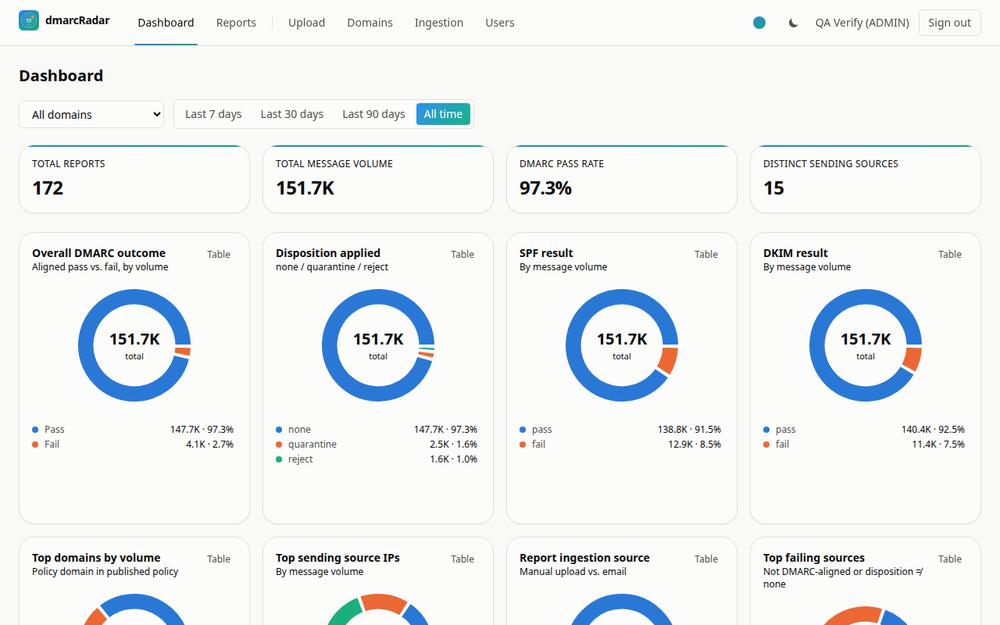
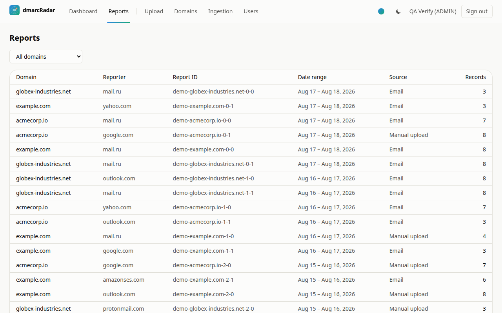
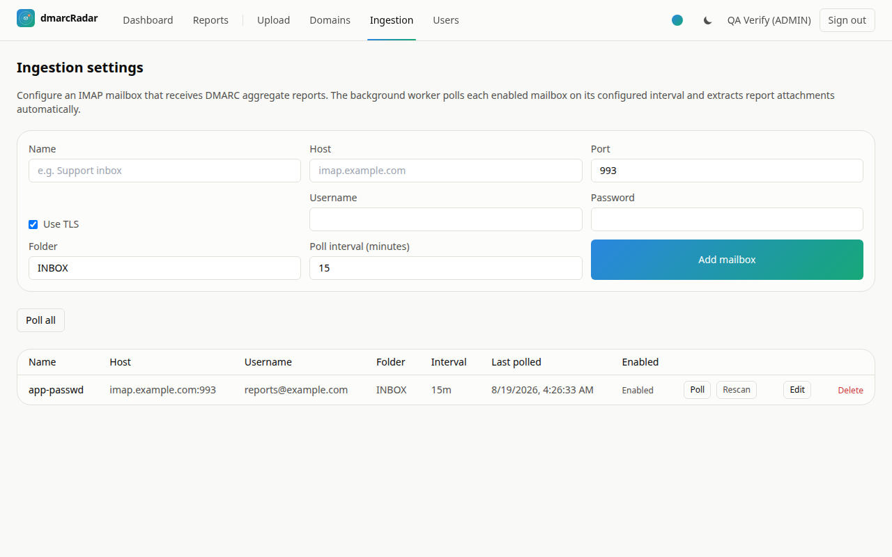
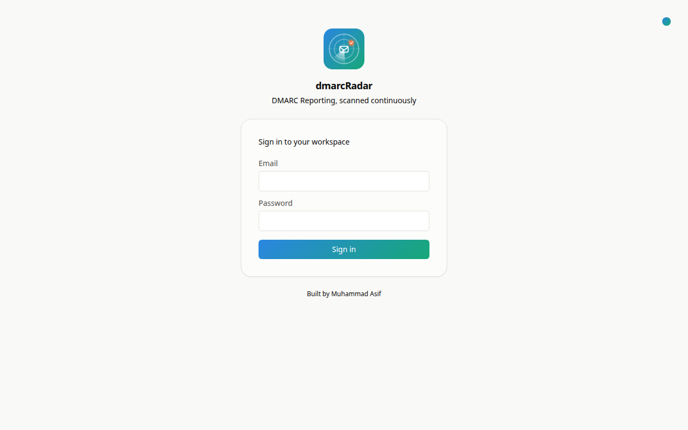
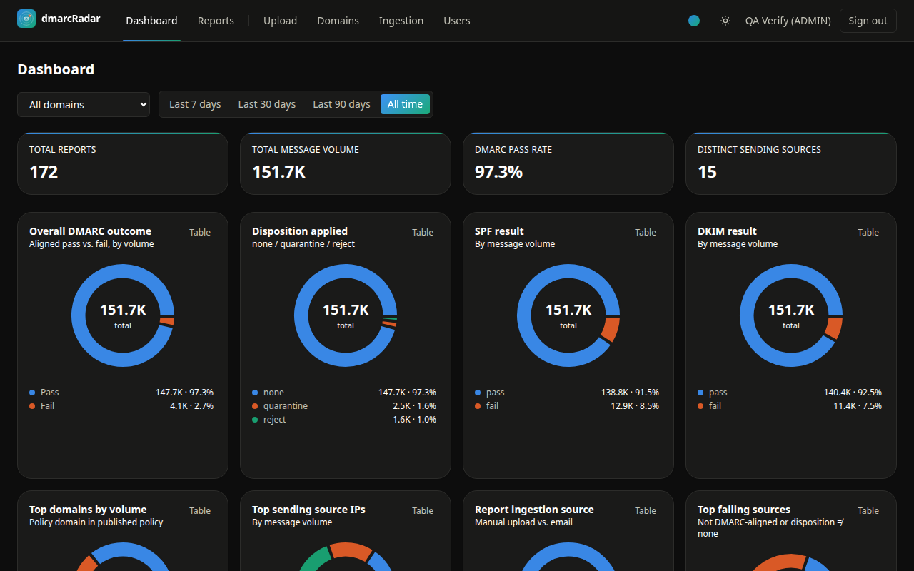
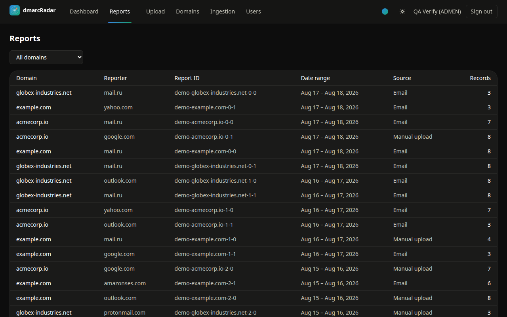
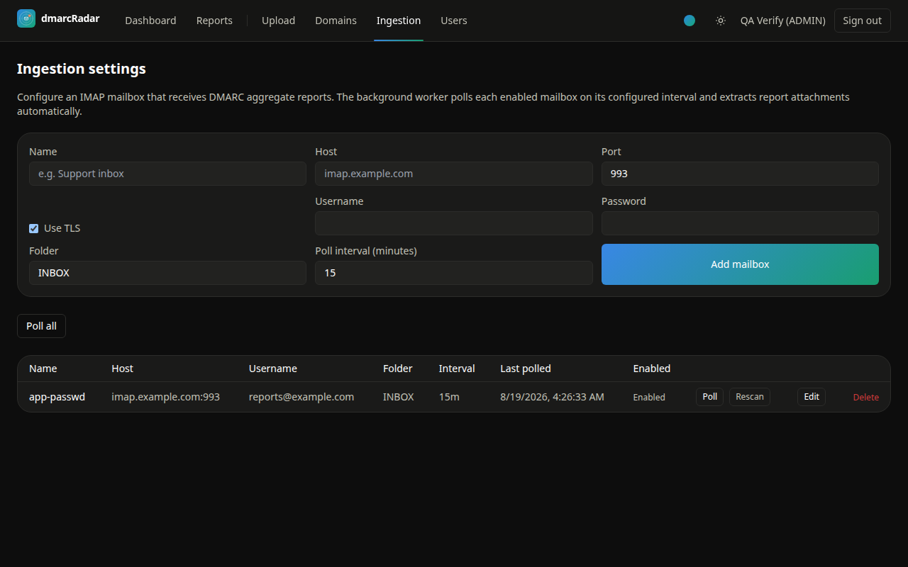
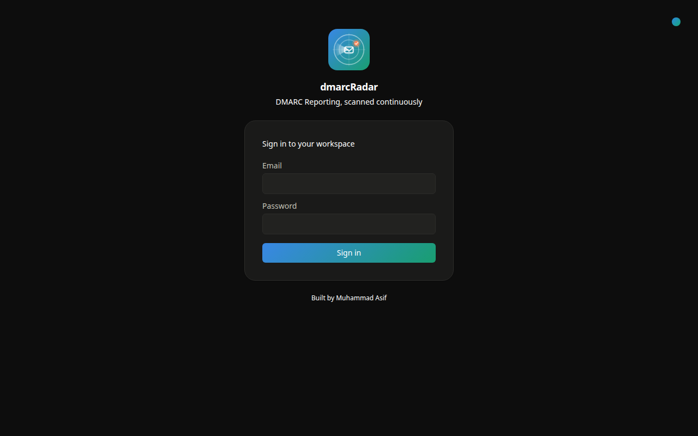

The fastest way to get a running instance — no local Node/Postgres install required.
git clone https://github.com/cloudlative/dmarcRadar.git
cd dmarcRadar
cp .env.example .env # fill in NEXTAUTH_SECRET / MAILBOX_SECRET, e.g. `openssl rand -hex 32`
docker compose up -d
docker compose exec app npx prisma migrate deploy
docker compose exec app npm run seed
Open http://localhost:3000 and sign in with the seeded admin credentials from .env
(SEED_ADMIN_EMAIL / SEED_ADMIN_PASSWORD). This pulls the published
ghcr.io/cloudlative/dmarcradar:latest image for both the app and the ingestion worker — see
Container images below for what else it tags, and
Docker Compose (full stack) for building from local source instead.
Dashboard — pass/fail, disposition, SPF/DKIM, top domains and sources, all as donut charts with a real data table underneath.

Reports — every ingested report, filterable by domain.

Ingestion settings — configure IMAP mailboxes, trigger a manual poll, or rescan a mailbox from the start.

Sign in — with whichever color theme you've picked.

The same four screens with the dark theme and the default Signal color palette selected. A theme picker (top-right of the app nav, and on the login page) also offers two more palettes — Ember (warm terracotta/amber) and Slate (monochrome + indigo) — each with its own light and dark variant.




imapflow + mailparser for IMAP ingestion, run from a standalone worker process.env.example to .env and fill in NEXTAUTH_SECRET / MAILBOX_SECRET
(openssl rand -hex 32 for both). POSTGRES_USER/POSTGRES_PASSWORD/POSTGRES_DB and
DATABASE_URL can be left as-is for local use — see the comment above them in
.env.example if you change the DB credentials, since both need to stay in sync.docker compose up -d postgresnpm installnpm run prisma:migratenpm run seednpm run devnpm run workerSign in with the seeded admin credentials from .env (SEED_ADMIN_EMAIL / SEED_ADMIN_PASSWORD).
All secrets — Postgres credentials, NextAuth secret, the mailbox-password encryption key, the
seed admin's credentials — live only in .env (gitignored). Nothing is hardcoded in
docker-compose.yml, the Dockerfile, or source: the postgres service reads its own
credentials from .env via env_file, and the app/worker services derive their
containerized DATABASE_URL from those same POSTGRES_* values (pointed at the postgres
service instead of localhost — see the comment in docker-compose.yml), so there's one
source of truth for the DB password rather than two copies that can drift out of sync.
A static landing page lives in docs/ and deploys automatically to GitHub Pages via
.github/workflows/pages.yml on every push to main that
touches docs/, README.md, or the generator script. Published at
https://dmarcradar.cloudlative.com (custom domain, HTTPS enforced) — the underlying
cloudlative.github.io/dmarcRadar/ URL still resolves too, but the custom domain is canonical.
docs/CNAME records the domain so it's tracked in version control alongside the
repo's Settings → Pages → Custom domain setting.
docs/index.html is the hand-authored landing page; docs/guide.html is this README rendered
to HTML by scripts/generate-docs.mjs, styled with the same
theme/palette system (docs/assets/site.css) so it matches the rest of the site. The Pages
workflow regenerates it on every deploy, so it's always current — to preview a README change
locally before pushing, run:
npm run docs:generate
Every push to main builds and publishes one image to GitHub Container Registry via
.github/workflows/docker-build.yml:
ghcr.io/cloudlative/dmarcradar:latest — always the most recent main buildghcr.io/cloudlative/dmarcradar:<short-sha> — every build, pinned to its commitghcr.io/cloudlative/dmarcradar:vX.Y.Z — semver-tagged builds from version tagsThe same image serves both roles in docker-compose.yml, which references it via image:
(pulled for docker compose up) — the app service runs it with the default command
(npm start); the worker service runs the identical image with its command overridden to
npx tsx worker/poller.ts. One image, one build, two roles.
One-time setup: GitHub Container Registry packages inherit their parent repo's visibility
at the time they're first published, independent of the repo's visibility afterwards. The
GITHUB_TOKEN the workflow runs with cannot change a package's visibility — that requires
either the web UI or a personal access token with package scopes:
# Requires a token with read:packages/write:packages/delete:packages scopes:
# gh auth refresh -h github.com -s read:packages,write:packages,delete:packages
gh api -X PATCH /orgs/cloudlative/packages/container/dmarcradar/visibility -f visibility=public
Or via the UI: the repo's Packages sidebar → package → Package settings → Change visibility → Public. This only needs to be done once — it persists across future builds.
docker compose up -d
docker compose exec app npx prisma migrate deploy
docker compose exec app npm run seed
This pulls ghcr.io/cloudlative/dmarcradar:latest for the app and worker services. To
build from local source instead (e.g. testing an unpushed change), use docker compose up -d --build.
This starts Postgres, the Next.js app, and the ingestion worker together.
npm run test
Covers the DMARC XML/gzip/zip parser and the dashboard stats aggregation logic.
See prisma/schema.prisma. Reports are deduped on (reportId, orgName, domainId), so
re-polling the same mailbox or re-uploading the same file is a no-op.
Logo source and rasterized assets live in branding/:
logo-icon.svg — master square mark (used for src/app/icon.svg, the in-app Logo
component, and favicons), rasterized to logo-icon-{16,32,48,64,128,192,256,512}.pnglogo-icon-animated.svg — same mark with the radar sweep animated via SMIL (<animateTransform>)
instead of CSS, so it keeps spinning when embedded standalone (e.g. this README) where the
app's stylesheet isn't loaded. Used at the top of this file.logo-wordmark-{light,dark}.svg — icon + wordmark lockup for light/dark backgrounds,
rasterized at 1x/2x/3x for use in docs, social previews, or a repo cardRegenerate the PNGs after editing an SVG source with:
npm install --no-save sharp
node scripts/generate-logo-assets.mjs
Built by Muhammad Asif.